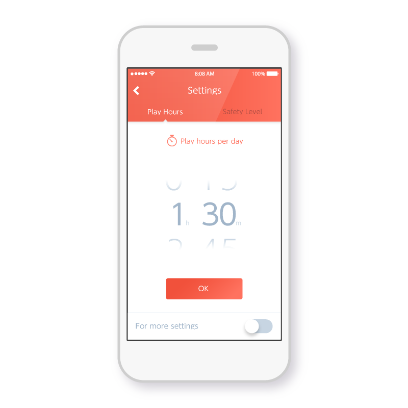

This section introduces the service that uses a smart device app.
We plan to offer a service to set and check the parental controls and other settings on the NX using a smart device app tentatively named NX Protect.

The vision for this service is that it would be used by parents or guardians of children playing on the NX. It could be used not only for control, but also in the following ways as a means of promoting communication between the parent and the child.
The play timer can be used to manage play time on the NX system. It can be used to set the number of hours of play, and the time to stop playing.
The play timer counts down while the NX is being played, and a notification is displayed on the NX screen when time is running out and when the set time has been exceeded. In addition to displaying these notifications, the NX can be forced to stop (see Note) when the set time has been exceeded.
Note: The plan is to put the system in a similar state to when the HOME Button is pressed or when the system is in the sleep mode, and the NX cannot be resumed until the next day.
CONFIDENTIAL